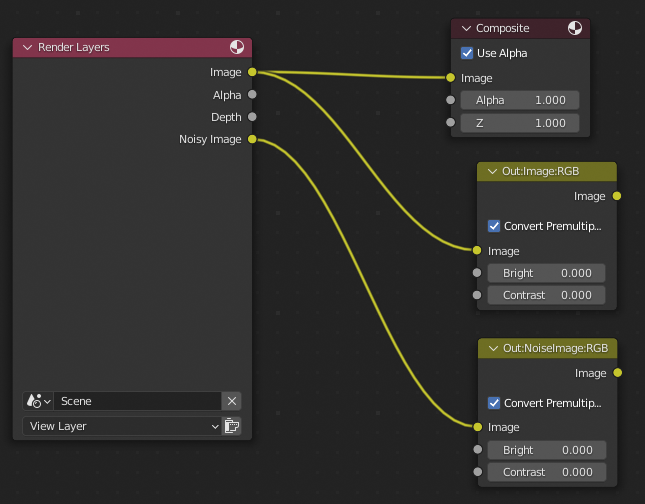

Level 1 - Basic Configuration Details#
This workspace demonstrates the minimal setup to render anything with Catharsys. This is also the first step in a series of documents introducing the various aspects of Catharsys setup by step.
Installation#
To get started, let’s install the workspace from a template,
Shell
cathy install template workspace-just-render
This command will ask you a couple of questions, as it allows you to create your own workspace, with your own names from a template. For this example, we will choose “level-1” as module name and “just-render” as configuration name. The output from the command should look something like this:
Creating template 'workspace-just-render'
Enter new module name (press RETURN to abort): level-1
New module path: [...]/level-1
Create module folder [y]/n:
Please enter values for the following template parameters:
Using 'Configuration' = 'just-render'
Using 'MODULE-NAME' = 'level-1'
Do you want to use these values [y]/n/x:
_cfg-name_ -> just-render
To simplify working with the workspace, you can use VS-Code. To initialize the workspace for VS-Code, change to the workspace folder, ensure that you are in the conda environment you want to use and execute the command,
Shell
cathy code init
This generates a workspace file for VS-Code. You can open this workspace from VS-Code or run the following command,
Shell
cathy code show
Initialization#
Since we want to render something with Blender, we also need to initialize Blender for this workspace. If you havn’t installed Blender, yet, go back to the Catharsys system installation documentation, and find the part for installing Blender. Note that this template workspace expects Blender version 3.3.
Initialize Blender for all configurations of the newly created workspace with the command,
Shell
cathy blender init --all --addons
Note that there will be separate Blender installations, one for each combination of Conda workspace and Catharsys version. Since every configuration can specify a different Blender version, there is a Blender configuration folder for each configuration called _Blender. This folder contains the Blender user preferences and symbolic links to the installed addons for this configuration. How you specify this, will be discussed later, when we talk about the execution file.
To get an overview of the available configurations and actions in the workspace, run the command,
Shell
cathy ws info
To start our first render, let’s launch an action,
Shell
cathy ws launch -c just-render -a run
If everything has been installed correctly, you should now find an image in the folder _render/rq0004/just-render/Camera/Image.
Clearly, you could have rendered this image by just starting up Blender and rendering it. However, even this simple setup can be helpful, if you want to render many frames of an animation. In this case, Catharsys can split the rendering into a number of jobs that can be executed in parallel on a GPU cluster running the LSF job distribution system, or simply on a machine with a number of graphics cards.
Configuration Files Overview#
The configuration files of the workspace are located in the folder config/just-render. There you can find the following files:
launch.json5: The launch file, specifying the available actions and defining action parameters. This file must be calledlaunch.jsonorlaunch.json5.manifest.json5: The manifest file, which specifies the configuration types per action.trial.json5: The trial file gives a list of configurations per configuration type for each action, as specified by the manifest.exec.json5: The execution file defines how to execute the action. For Blender rendering it also defined which Blender version to use and which addons.
The Blender render action also needs these configuration files:
capture.json5: The capture configuration specifies how to capture the images. For standard rendering this is simply the framerate. For rolling shutter rendering, this contains the rolling shutter parameters.render.json5: The render configuration configures the renderer and defines which render outputs to generate.Test.blend: This is Blender file that is used for rendering.
The file Launch.ipynb is a Jupyter notebook that allows to launch actions and view the results via the Catharsys API.
Now, let’s now have a look at the various configuration files.
The Launch File#
The launch file must be called launch.json or launch.json5 and is meant to simplify starting an action for a configuration. Instead of putting all the necessary parameters in a command line, they are contained in the launch file. The launch file in this example contains documentation for all the parameters. In the following, the most important parts are discussed here.
Actions#
{
// The type identifier of this file
"sDTI": "/catharsys/launch:3.0",
// The id of this launch parameter set
"sId": "$filebasename",
// Some information what this configuration is for
"sInfo": "Minimal workspace for rendering with Blender file",
// The map of all actions that can be launched
"mActions": {
// An arbitrarily chosen name for an action.
// In this case it makes sense to call it 'render', as it
// executes the rendering action.
"run": {
"sDTI": "/catharsys/launch/action:1.0",
// The id of the action
"sActionDTI": "/catharsys/action/std/blender/render/std:1.0",
// The action configuration
"mConfig": {
// ...
}
// ...
}
}
}
For the naming convention and the meaning of the sDTI elements, see the workspace basics documentation.
The file’s id is defined via a variable, using the syntax $[variable name]. See the ison language documentation for more information on using variables and functions in JSON files. For a list of available variables see the configuration variables documentation.
The main Block in the launch file is the mActions block. Here, a set of actions is defined. The elements in the mActions block are freely choosable names of actions. Each action is again a dictionary specifying the action type and its configuration. In the example above, the action is called run. This is the action name you use when launching an action from the command line. The actual action that is started, is referenced by the sActionDTI element. In this case, we want to execute the standard Blender rendering action version 1.0.
Note
You can find an overview of the available standard actions here.
Note
When an action is installed in the Conda environment, it registers its’ name (the action DTI) as an entry point. The Catharsys system uses the name specfied in the sActionDTI element, to search for an action in the current environment. It’s fairly straight forward to write your on action and register it in the system using the standard action template. This template can be installed with the command cathy install template std-action-python.
Action Configuration#
The action configuration parameters are contained in the mConfig block. In this example,
"mConfig": {
"sDTI": "/catharsys/launch/args:1.1",
"sInfo": "Render blender file",
// IMPORTANT: All files of type '.json', '.json5' and '.ison' can be
// referenced by their basename alone, without the extension.
// The appropriate extension is added automatically.
// The name of the trial file to use.
"sTrialFile": "trial",
// The execution configuraion file.
// IMPORTANT: All file paths are regarded as relative
// to the path of the current file.
"sExecFile": "exec",
// [...]
}
The sInfo element gives a short info about the action, which is displayed by the command cathy ws info.
The sTrialFile and sExecFile reference the trial and execution configuration used for this action. The trial file specified which (partial) configurations to use for this action and the execution file specifies how to execute the action. For this Blender render action, the execution file specifies the Blender version to use, which Blender addons to install and whether Blender is executed locally or on a job distribution system.
Note
The Blender initialization command cathy blender init uses the execution file of a configuration to know which Blender addons to install and how to configure them.
The trial and execution files are discussed in more detail below.
Render Action Parameters#
The render action expects a number of additional parameters in the mConfig block:
iFrameFirst: The index of the first frame to renderiFrameLast: The index of the last frame to renderiFrameStep: The step increment for the frame indexiRenderQuality: The render quality in samples per pixel. This value will be used in the name of the top render folder. For example, if the render quality is set to 4, the top render folder is calledrq0004. You can overwrite this behaviour by specifying the elementsTopFolder.sTopFolder: If this parameter is specified, it defines the name of the top folder, instead of using the render quality. This is useful for actions that do not render, or if the render action just generates a new Blender file. This is discussed in the render output list configuration.bDoProcess: Boolean flag, wether to actually process the action or not. If this is set tofalse, the configurations are processed but the actual action is not executed. For the render action, also the Blender file is modified, if so specified, but the rendering itself is not executed. This can be used in combination with the parameterbDoStoreProcessDatato not render the Blender file but just to save it for debugging.bDoOverwrite: When this istrueall output files that will be generated by this action will be deleted beforehand if they are already present.bDoStoreProcessData: When this is set totrue, the modified Blender file is stored after all modifications have been applied but before it is rendered. For other actions, this paramter may have no effect or store some other data.
The __platform__ Element#
Before we discuss the execution file, a short aside explaining the __platform__ element, that can be used as part of any dictionary. Before a dictionary is parsed by the configuration parser (ISON parser), it looks for a __platform__ element. This can be part of any dictionary not just at the top level of a JSON file. The __platform__ block is replaced by a __data__ block depending on the operating system and node (machine name). This is best seen in an example,
{
"sDTI": "/catharsys/exec/blender/std:2.1",
"sId": "${filebasename}",
"__platform__": {
"Windows": {
"__data__": {
"sDTI": "/catharsys/exec/blender/std:2.1"
}
},
"Linux": {
"hi-025l": {
"__data__": {
// Use the LSF job distribution system (must be installed on system)
"sDTI": "/catharsys/exec/blender/lsf:2.1",
// [...]
},
},
},
},
}
The whole __platform__ block is replaced by the contents of the corresponding __data__ block, depending on the operating system, Windows or Linux, and for Linux only if the current node is called hi-025l. The contents of the __data__ block overwrites any elements of the same name defined outside the __platform__ block. In this case, the sDTI element at the top will be overwritten by the platform specific sDTI element.
In this example, the execution type is selected depending on the machine the action is launched from. If it is a Linux node with the name hi-025l, the jobs are executed using the LSF system. In all other cases a local execution of Blender is performed.
The __platform__ is also helpful to specify absolute paths of addons or assets depending on the machine the configuration is executed on.
The Execution File#
The main purpose of the execution file is to specify how to execute an action. Typically an action is a python script. The execution file now defines whether this script is executed with a Python process directly, is run inside Blender or is started as a job in a job distribution system like LSF. How a script is executed is determined by the DTI string in the sDTI element of the execution file. The currently available execution types are:
Blender on the local machine:
/catharsys/exec/blender/std:2.1Blender on a LSF system:
/catharsys/exec/blender/lsf:2.1Python process on the local machine:
/catharsys/exec/python/std:2.0Python process on a LSF system:
/catharsys/exec/python/lsf:2.0
Each of these execution types has their own set of parameters. The important element in this basic example is the element sVersion in the mBlender dictionary of the execution file exec.json. This determines the version of Blender to use.
Note
Since every action specifies an execution configuration, you can use different Blender versions per action.
For a description of all elements of an execution file see this documentation.
The Manifest File#
Before discussing the trial file, we first need to understand the manifest file, which is referenced by the trial file. Recall that each action specified in the launch file can reference a different trial file, which means that each action could have a different manifest file. However, typically there is one manifest file per configuration.
From the overview of the Catharsys system, recall that one of the design principles of Catharsys is, to enable the combination of different partial configurations into a set of full configurations. For example, you may want to vary the camera position, the set of objects in the scene, the ego velocity of the camera, etc. Each of these variations has a configuration type associated with it. In the manifest file you declare which configuration types you want to vary, and in the trial file you sepecify a set of actual configurations for each type.
Here is the manifest file of the example workspace we installed:
{
"sDTI": "/catharsys/manifest:1.1",
"sId": "${filebasename}",
"mActions": {
"run": {
"sDTI": "manifest/action:1",
"lConfigs": [
{ "sId": "render", "sDTI": "blender/render/output-list:1", "sForm": "file/json", "bAddToPath": false },
{ "sId": "capture", "sDTI": "capture/std:1", "sForm": "file/json", "bAddToPath": false },
{ "sId": "camera", "sDTI": "camera-name:1", "sForm": "value", "bAddToPath": true },
],
"lDeps": []
},
}
}
The main part of the manifest file is the mAction dictionary. This dictionary must list the action(s) you want to use it for with exactly the same name as in the launch file. In this case, this is only the action run. For each action the list of configuration types must be defined in the lConfigs list. Each element of the lConfigs list is a dictionary with the following elements:
sId: an arbitrary id string, which is used in the trial file to specify the actual configurations to use.sDTI: The DTI string specifying the type of configuration data expected for this id.sForm: The form in which the configuration data is made available. The currentyl available values arefile/jsonfor a list of JSON configuration filename specified in the trial filevaluefor a list of values specified in the trial fileconst-valuefor a a list values specified in the additional elementlValues.
bAddToPath: An optional parameter specifying whether the id of the corresponding configuration files given in the trial file, will be used in the output path. More details on this below. The default value of this parameter istrue.
The element lDeps allows you to specify a list of actions, the current action depends on. This is used to automatically generate a source and target path for an action.
Note
Note that you are not limited to configuration file types pre-defined in the Catharsys system. When a configuration is compiled, the compiler only checks that the DTI of a configuration file specified in the trial file, fits the DTI given in the manifest for the corresponding trial id. This means, you can just invent your own types, to pass configurations to an action.
Automatic Output Path Generation#
The elements in the lConfigs list are used to automatically generate an output path for the result data of an action. For each configuration an id is generated, either from the configuration JSON file referenced in the trial file, or the value given in the trial file. These ids are combined into a path in the order they are given in the lConfigs list.
Using the manifest example from above, assume that the trial file specifies a configuration file with id image for render, similarly default for capture and value cam1 for camera, the generated path is image/default/cam1 if bAddToPath is true for all. In this way, each combination of configurations generates a unique path, that is used to store the resultant data.
In the above example, only the camera name is used to generate the output path. The full output path adds _render/rq0004/[trial id] in front of the path generated from the manifrest, if iRenderQuality in the launch file is set to 4. The data rendered in the beginning is located in _render/rq0004/just-render/Camera/Image, because the id of the trial file is just-render, the name of the camera is Camera and the image output folder is Image in this case. Note that a render can output multple images in different file formats. This will be discussed with the render output list configuration.
The Trial File#
The trial file specifies which configurations to use for the configuration types given in the manifest file. The example trial file looks like this:
{
"sDTI": "/catharsys/trial:1.0",
"sId": "${rel-path-config}",
"sManifestFile": "manifest",
"mConfigs": {
"render": ["render"],
"capture": ["capture"],
"camera": [ "Camera" ],
},
"mBlender": {
"sDTI": "/catharsys/trial/blender:1.0",
"sBlenderFile": "${path-config}/Test.blend",
}
}
The elements of the trial file are:
sDTI:/catharsys/trial:1.0sId: The id of the trial file. In this case we use the variablerel-path-config, which results injust-renderin this case. See the configuration variables documentation for a list of all variables.sManifestFile: The relative path to the manifest file. Note that you do not need to give the file extension if the extension is.json,.json5or.ison.mConfigs: A dictionary of the ids specified in the manifest. For each id the value must be a list of value or relative JSON file paths.mBlender: This is only needed for an action related to Blender rendering or rendering post-processing. It contains the elements:sDTI:/catharsys/trial/blender:1.0sBlenderFile: The relative or full path to a Blender file. Here the variablepath-configis used, which is the absolute path to the current configuration.
This trial file is very basic, just defining one configuration for each configuration type in the manifest. The configuration types are also the minimal set of types for a Blender render action. Running the render action with this trial file will therefore only generate one configuration path with the rendered images.
Exercise
Define a second camera in the Blender file and add its’ name to the camera list in the trial file. When you launch the render action with cathy ws launch -c just-render -a run again, separate folders, one for each camera, should be created containing the correspondig images.
The Render Configurations#
The remaining two configuration files, render.json5 and capture.json5, are specific to the render action. The render file specifies parameters for the Blender ray tracer and the types of outputs that should be generated. The capture file simply defines the frame rate in this case.
For a more complex setup, there can be many more configuration files for the render process, for example, to load assets, modify the scene or create new cameras. In the example here we will concentrate on the bare minimum needed for rendering.
The Blender render output list#
The file render.json5 specifies parameters for the Blender ray tracer and the types of outputs generated. The main structure of the file looks like this:
{
"sDTI": "/catharsys/blender/render/output-list:1",
"sId": "${filebasename}",
"lSettings": [
{ }, // settings type 1
{ }, // settings type 2
],
"lOutputs": [
{ }, // Output configuration 1
{ }, // Output configuration 2
] // lOutputs
}
Settings#
The element lSettings is optional anc contains a list of setting type dictionaries. Currently, there are two setting types available:
Render settings for the Blender variables in
bpy.context.scene.renderuse the DTI/catharsys/blender/render/settings/render:1Cycles settings for the Blender variables in
bpy.context.scene.cyclesuse the DTI/catharsys/blender/render/settings/cycles:1Catharsys Blender render action settings use the DTI
/catharsys/blender/render/settings/main:1
For example, setting bpy.context.scene.render.use_persistent_data to true and bpy.context.scene.cycles.tile_size to 4096, is done in this way:
"lSettings": [
{
"sDTI": "/catharsys/blender/render/settings/render:1",
"use_persistent_data": true,
},
{
"sDTI": "/catharsys/blender/render/settings/cycles:1",
"tile_size": 4096,
},
],
To find out the Blender variable names, right-click on the option in Blender you want to change and select “Copy Full Data Path”. Paste this to an editor and just use the part behind render or cycles, respectively.
Render Setting#
Some important render settings (/catharsys/blender/render/settings/render:1) are:
Element |
Values |
Description |
|---|---|---|
engine |
“BLENDER_EEVEE”, “BLENDER_WORKBENCH”, “CYCLES” |
This selects the render engine in Blender |
For example,
"lSettings": [
{
"sDTI": "/catharsys/blender/render/settings/render:1",
"engine": "CYCLES"
},
],
CYCLES Setting#
Some important settings for CYCLES (/catharsys/blender/render/settings/cycles:1) are:
Element |
Values |
Description |
|---|---|---|
sComputeDeviceType |
“OPTIX”, “CUDA” |
This is a setting that is not directly applied to an element of cycles object in Blender. It sets which computing device to use. Usually only works if |
bCombinedCpuCompute |
true, false |
Whether to combine the compute power of the CPU and GPU if a GPU is available and selected. |
device |
“CPU”, “GPU” |
Select whether to render on the CPU or GPU |
For example,
"lSettings": [
{
"sDTI": "/catharsys/blender/render/settings/cycles:1",
"sComputeDeviceType": "OPTIX",
"bCombinedCpuCompute": false,
"device": "GPU"
},
],
Catharsys Render Setting#
There is currently only one one setting to modify the Catharsys Blender render action. The setting is bTransformSceneToCameraFrame, which determines, whether the whole scene is transformed so that the currently active camera is at the world origin, or not.
For example,
"lSettings": [
{
"sDTI": "/catharsys/blender/render/settings/main:1",
// Transform scene to camera frame, so that the active camera
// is at the world origin. This is needed to ensure that the
// polynomial, pingen and LFT cameras render properly.
"bTransformSceneToCameraFrame": true,
},
],
For more information see also LUT Camera and Rendering with LFT, LUT or Poly Cameras.
Outputs#
In the lOutputs list, you can specify all the different types of outputs you want to generate for a scene configuration. The available output types are:
/catharsys/blender/render/output/image:1: renders an image/catharsys/blender/render/output/blend:1: generates a new Blender file after applying all modifications/catharsys/blender/render/output/anytruth/label:1: generates label data and a semantic segmentation image/catharsys/blender/render/output/anytruth/pos3d:1: renders an image where the RGB channels contain the XYZ world coordinates of the surface that generated the pixel. This can be used in a post processing step to calculate the depth./catharsys/blender/render/output/anytruth/local-pos3d:1: renders an image where the RGB channels contain the XYZ local object coordinates of the surface. This is used in conjunction with the object index to evaluate optical flow ground truth./catharsys/blender/render/output/anytruth/object-idx:1: renders the object index of all objects. This is used in conjunction with the local position render to evaluate optical flow ground truth.
Note
These output types are similar to the render layers of Blender. However, these explicit rendering types are needed for specific cameras that can be defined by anycam which are not Blender native. Cameras like the look-up table camera, which uses a LUT to specify the ray direction for each pixel, use an additional refractive surface in front of a standard Blender pinhole camera to render the image directly with distortion. However, Blender render layers like the depth layer, evaluate the depth only to the first surface in the ray path, which does not work here.
Each of the above render output types has different additional parameters. For this example, we will only consider the image output type. The configuration looks like this:
{
"sDTI": "/catharsys/blender/render/output/image:1",
"mCompositor": {
"sDTI": "/catharsys/blender/compositor:1",
"lFileOut": [
{
"sOutput": "Image",
"sFolder": "Image",
"sContentType": "image",
"mFormat" : {
"sFileFormat": "PNG",
"sColorDepth": "8"
}
},
]
}
} // output type 'image'
Compositor#
The only additional element is the mCompositor dictionary, which is used to specify which render output to save as image and how. Currently, the only element of mCompositor, next to the obligatory sDTI, is the lFileOut element, which contains a list of dictionaries that map a Blender compositor node output to a folder and image file type. To understand the dictionary in the lFileTypes list better, let’s have a look at the compositor node tree of the Blender file.
Note
To open Blender for the just-render configuration with the Blender file used by the run action, use the command cathy blender show -c just-render -a run. If you want to open a different Blender file use cathy blender show -c just-render -f [filename]. To open Blender with the just-render configuration settings but a blank, new Blender file, just execute cathy blender show -c just-render.
The compositor node tree looks like this:
{kind=link}
Catharsys can only store rendered images if a compositor node tree exists with nodes that specify output names and types.The node with the label Out:Image:RGB is in fact referenced by the dictionary in the lFileOutput list above. The sOutput element gives the name of the output. In the compositor node tree this name is given in the node label in the format Out:[name]:[type]. The node itself is just a dummy node to name an output. The image output of the Out:Image:RGB node is stored in the folder Image of the target configuration path, as specified in the element sFolder.
This means, the element sOutput specifies the output name in the Blender compositor node tree and the sFolder element set the output folder name for this image output.
The type part in the Out:[name]:[type] node name specifies how to treat the color channels. The allowed values are:
BWfor a single channel luminance imageRGBfor a three channel RGB imageRGBAfor a four channel RGBA image, including the alpha channel
Important
Blender files can only be rendered with Catharsys if they have a compositor node tree that contains at least one node with a label name of the type Out:[name]:[type].
The element sContentType has to be image or depth. It is currently only used for rolling shutter rendering, as the depth images are aggregated such that a standard deviation can be calculated for the final image. For standard rendering this element has no effect.
Output File Format#
The dictionaty mFormat specifies the file type and bit depth used to store the image. The dictionary always has to contain the element sFileFormat, which has to be one of OPEN_EXR, JPEG or PNG. For each of these types, there are additional parameters that can be set. These are:
For
OPEN_EXR:sCodec, has to be one ofZIP(default),NONE,PIZ,RLE,ZIPS,PXR24(lossy),DWAA(lossy),DWAB(lossy)sColorDepth, has to be 16 (half single precison float) or 32 (single precision float). The default is 32.
For
PNG:sColorDepth, has to be 8 (8bit color) or 16 (16bit color).iCompression, has to be an integer between 0 and 100, specifying how strongly to compress the image. 0 is no compression and 100 maximal compression. THe default is 15. The compression is always lossless.
For
JPEG:sColorDepth, can be specified but has to be 8.iQuality, has to be an integer between 0 and 100, specifying the (lossy) compression quality. 0 is lowest quality and 100 is highest quality.
Note
You can write the same compositor node output to any number of different folders with different file types. Simply add another dictionary to the lFileOut list, with the same sOutput name but different sFolder and mFormat settings.
Exercise
Write the compositor node output of the node Out:NoiseImage:RGB to the folder Noisy in OpenEXR file format with 16bit color depth.
The Capture Configuration#
The capture configuration for standard rendering is pretty basic, as it just contains the framerate to use. In this example the capture configuration looks like this:
{
"sDTI": "/catharsys/capture/std:1.0",
"sId": "${filebasename}",
"dFPS": 30.0
}
The element dFPS specifies the framerate as floating point value. For a rolling shutter rendering, there are number of additional parameters, specifying exactly the type of rolling shutter that is to be simulated. This will be discussed with the rolling shutter render action.
The reason why you can specify the framerate as a configuration value, is that you can render the same Blender file with different framerates by using different capture configurations in this way. Catharsys uses the frame index together with the framerate specified in the capture configuration to calculate a render time. This render time is used together with the framerate specified in the Blender file to calculate the frame index in the Blender file. This Blender frame index is then set and the image is rendered.
Important
To avoid aliasing effects, ensure that the framerate you specify in the capture configuration is a divisor of the framerate specified in the Blender file. For example, if you want to render at 15, 30 and 45 fps, the Blender file framerate should be an integer multiple of 45 fps.
The Jupyter Notebook Launch.ipynb#
This Jupyter notebook uses the Catharsys API to launch an action and display the resultant images. It contains some documentation of the API used. This can be a more convenient way of working with a configuration.